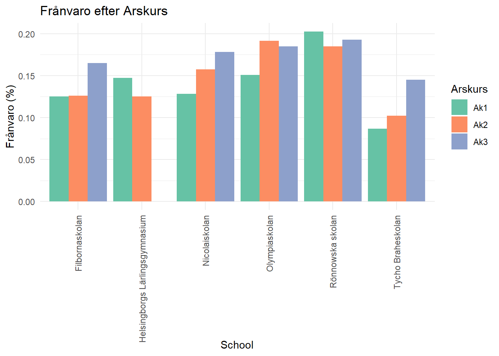
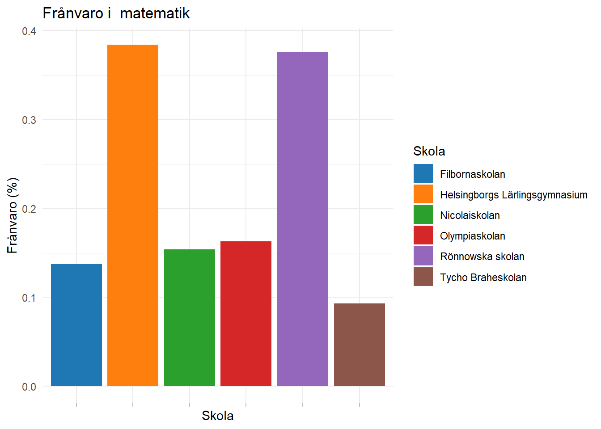
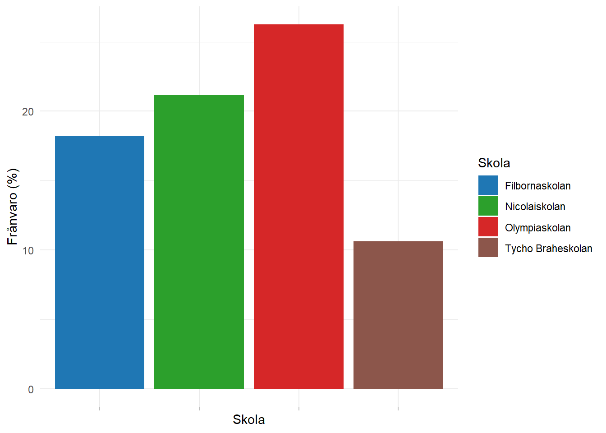
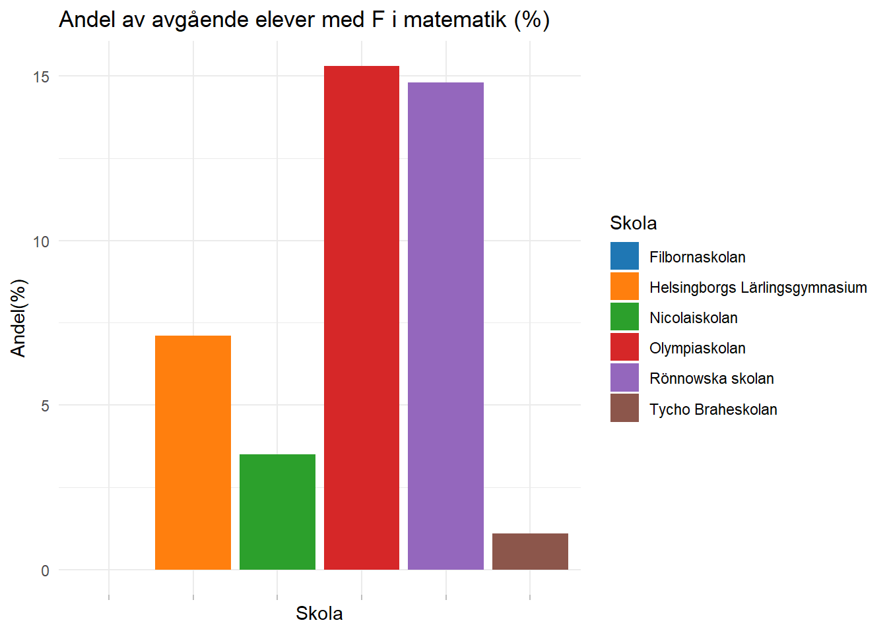
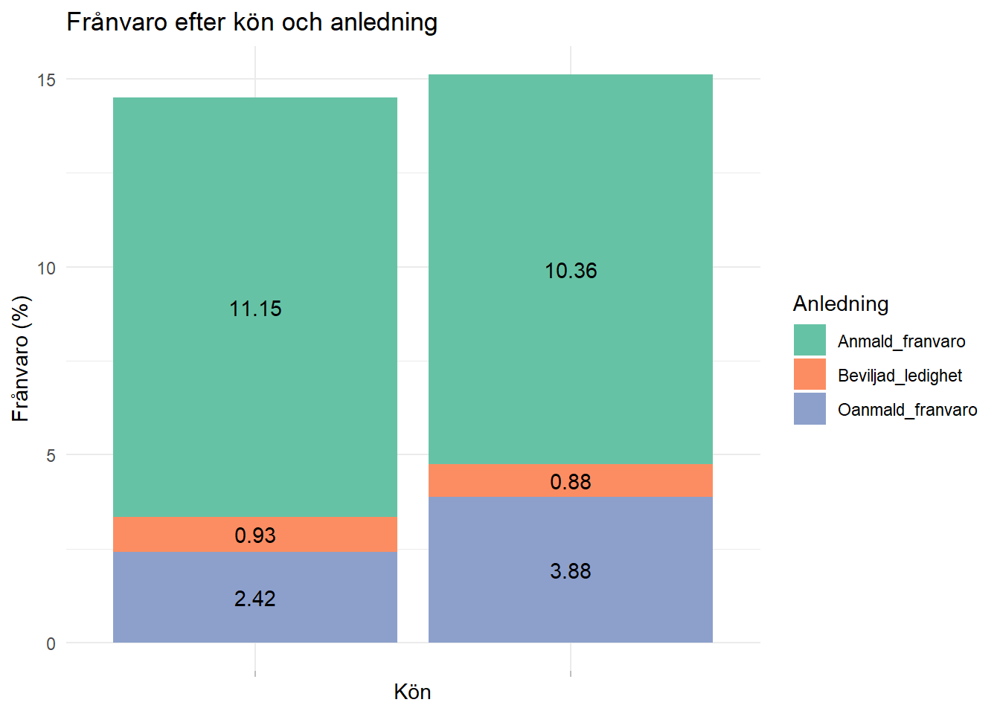
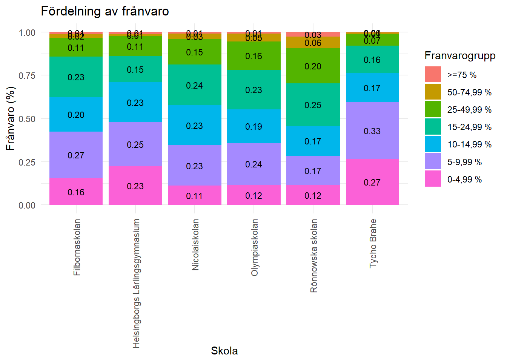

| Skola | rapporteringsgrad(%) |
|---|---|
| Filbornaskolan | 91.6 |
| Helsingborgs Lärlingsgymnasium | 88.1 |
| Nicolaiskolan | 87.4 |
| Olympiaskolan | 89.8 |
| Rönnowska skolan | 80.8 |
| Tycho Braheskolan | 90.2 |
Franvaro gymnasiet
Rapporteringsgrad
Oanmäld frånvaro registreras när lärare tar närvaro. Om frånvaro sker under ett lektionspass som inte rapporteras, kommer den att missas. För att undersöka pålitligheten hos våra frånvarosiffror behöver vi först granska rapporteringsgraden. Hur stor andel av skolans lektioner rapporteras? I tabell 1 visas rapporteringsgraderna för gymnasieskolorna i Helsingborg. Siffrorna är generellt högre än för grundskolan, där Rönnowska skolan sticker ut med en rapporteringsgrad på endast 80%. En ny applikation i Beslutsstödet, som förväntas publiceras under hösten, kommer att låta oss följa rapporteringsgraden för skolorna och sortera efter olika parametrar. Detta kommer att synliggöra rapporteringsgraden för både huvudman och skolor.
Justerad närvaro
En skolas rapporteringsgrad påverkar frånvarograden, då oanmäld frånvaro missas. Lägre rapporteringsgrad leder till lägre frånvarosiffror. Om vi antar att den oanmälda frånvaron är lika stor på de orapporterade lektionerna som på de rapporterade, får vi annorlunda frånvarosiffror. Dessa redovisas i tabell 2, där vi ser att den uppskattade verkliga frånvaron är några tiondelars procent högre på de flesta skolor, med undantag för Rönnowska skolan, där den uppskattas vara 1.3 procentenheter högre..
| skola | franvaro | Justerad Frånvaro | Skillnad(%) |
|---|---|---|---|
| Filbornaskolan | 13.9 | 14.1 | 0.2 |
| Helsingborgs Lärlingsgymnasium | 13.2 | 13.6 | 0.4 |
| Nicolaiskolan | 15.7 | 16.2 | 0.5 |
| Olympiaskolan | 16.8 | 17.3 | 0.5 |
| Rönnowska skolan | 19.8 | 21.1 | 1.3 |
| Tycho Braheskolan | 11.2 | 11.3 | 0.1 |
Frånvaro för repektive program
Det finns en märkbar variation i frånvaro mellan skolor och ännu större skillnader mellan olika program. Tabell 3 visar alla program och skolor sorterade efter frånvaro. Vi noterar att Lärlingsgymnasiet har flera program med lägst frånvaro, men även några med högst frånvaro. Filbornaverket är representerat både vid toppen och botten. Tabellen visar också de antagningspoäng som krävdes för att komma in på programmen 2021. Även om det finns en tydlig trend där högre frånvaro ofta korrelerar med lägre antagningspoäng, finns det program med lägre antagningspoäng och relativt låga frånvarotal.
| Skola | Program | Frånvaro(%) | Merit lägsta | Merit medel |
|---|---|---|---|---|
| Filbornaskolan | Industritekniska programmet | 27.3 | A | 163.0 |
| Helsingborgs Lärlingsgymnasium | Handels- och administrationsprogrammet | 26.7 | 157.5 | 202.0 |
| Filbornaskolan | Introduktionsprogram | 25.6 | ||
| Rönnowska skolan | Yrkesintroduktion | 23.7 | ||
| Filbornaskolan | Individuellt alternativ | 23.3 | ||
| Helsingborgs Lärlingsgymnasium | Restaurang- och livsmedelsprogrammet | 20.8 | 125.0 | 195 |
| Rönnowska skolan | Hotell- och turismprogrammet | 20.7 | A | 182.0 |
| Filbornaskolan | Yrkesintroduktion | 20.5 | ||
| Rönnowska skolan | Fordons- och transportprogrammet | 20.5 | A | 141.0 |
| Rönnowska skolan | VVS- och fastighetsprogrammet | 20.4 | A | 167 |
| Olympiaskolan | Barn- och fritidsprogrammet | 19.0 | A | 165.0 |
| Rönnowska skolan | Hantverksprogrammet | 19.0 | A | 173.0 |
| Rönnowska skolan | Programinriktat val | 18.9 | ||
| Rönnowska skolan | Bygg- och anläggningsprogrammet | 18.3 | A | 159.0 |
| Rönnowska skolan | El- och energiprogrammet | 17.9 | A | 175.0 |
| Helsingborgs Lärlingsgymnasium | Försäljnings- och serviceprogrammet | 17.7 | ||
| Olympiaskolan | Samhällsvetenskapsprogrammet | 17.6 | A | 222 |
| Nicolaiskolan | Ekonomiprogrammet | 17.2 | 147.5 | 225 |
| Nicolaiskolan | Samhällsvetenskapsprogrammet | 16.1 | A | 232 |
| Helsingborgs Lärlingsgymnasium | Barn- och fritidsprogrammet | 15.5 | A | 180.0 |
| Nicolaiskolan | Yrkesintroduktion | 15.2 | ||
| Nicolaiskolan | Hantverksprogrammet | 15.0 | A | 190 |
| Olympiaskolan | Humanistiska programmet | 14.6 | A | 244.0 |
| Helsingborgs Lärlingsgymnasium | Industritekniska programmet | 14.3 | 165.0 | 186.0 |
| Nicolaiskolan | Estetiska programmet | 13.3 | ||
| Helsingborgs Lärlingsgymnasium | Hotell- och turismprogrammet, lärling | 13.1 | A | 145 |
| Filbornaskolan | Ekonomiprogrammet | 12.6 | 222.5 | 262.0 |
| Helsingborgs Lärlingsgymnasium | Vård- och omsorgsprogrammet | 12.5 | 200 | 215 |
| Rönnowska skolan | Restaurang- och livsmedelsprogrammet | 11.7 | A | 221 |
| Filbornaskolan | Naturvetenskapsprogrammet | 11.6 | 265.0 | 313.0 |
| Filbornaskolan | Samhällsvetenskapsprogrammet | 11.6 | 257.5 | 285.0 |
| Tycho Braheskolan | Teknikprogrammet | 11.5 | 227.5 | 279 |
| Tycho Braheskolan | Naturvetenskapsprogrammet | 11.3 | 222 | 275 |
| Filbornaskolan | Barn- och fritidsprogrammet | 10.8 | 122.5 | 201.0 |
| Helsingborgs Lärlingsgymnasium | VVS- och fastighetsprogrammet | 10.2 | 205 | 223 |
| Helsingborgs Lärlingsgymnasium | Fordons- och transportprogrammet | 9.3 | 195.0 | 212.0 |
| Helsingborgs Lärlingsgymnasium | Hantverksprogrammet | 9.1 | 175.0 | 219.0 |
| Helsingborgs Lärlingsgymnasium | Bygg- och anläggningsprogrammet | 8.1 | 210.0 | 234.0 |
| Helsingborgs Lärlingsgymnasium | El- och energiprogrammet | 7.0 | 245.0 | 258.0 |
Frånvaro efter årskurs
Tabell 4 visar frånvaron efter årskurs på respektive skola. En tydlig trend är att frånvaron ökar med åldern på eleverna. Trenden blir ännu mer påtaglig när man tar hänsyn till att årskurs 1 på flera skolor också inkluderar IM-program, som brukar ha högre frånvaro. Noterbart är att Lärlingsgymnasiet inte är med i denna statistik. Detta beror på att årskursfördelningen i frånvarostatistiken inte fungerar där; på grund av deras klassnamn hamnar de i fel årskurs i Skola24. När vi läser in höstens frånvaro kommer detta att rättas till, men för närvarande är årskurssiffrorna för Lärlingsgymnasiet felaktiga.

Frånvaro i matematik
Tabell 5 visar den samlade frånvaron för alla matematikkurser. Två skolor sticker ut med frånvarosiffror runt 45%. Tabell 6 visar frånvaron i årskurs 3; flera skolor saknas här då eleverna inte längre läser matematik i årskurs 3. Noterbart är Olympia, där tredjeårseleverna har en frånvaro i matematik på ungefär 26%, betydligt högre än tidigare graf. Tabell 7 visar andelen elever som inte klarade kurskraven i matematik för att få sin examen. Skolorna med hög andel frånvaro är samma skolor som har hög andel som inte klarade kurskraven. Filbornas elever hade dock frånvaro i matematik under årskurs 3 på nästan 20%, men ingen misslyckades med kurskraven i matematik.



Frånvaroanledning och kön
Pojkar och fickor har liknande frånvarosiffror. Pojkar har en frånvaro på 15,4% och flickor på 14,8%. Det är värt att undersöka hur fördelningen mellan olika former av frånvaro skiljer sig åt.
Tabell 8 visar att båda könen missar strax under 1% (0.93% för flickor och 0.88% för pojkar) av undervisningstiden för beviljat ledighet. Flickor missar 11.15% av all undervisningstid på grund av anmäld frånvaro, medan pojkar missar 10.36%. Pojkar missar dock 3.88% av undervisningstiden på grund av oanmäld frånvaro, jämfört med 2.42% för flickor. Stor andel av frånvaron är beviljad ledighet eller anmäld frånvaor. Även om båda könen hade 0% oanmäld frånvaro är fortfarande frånvarosiffran 12% för flickor och 11.24% för pojkar.

Fördelningen av frånvaro inom elevgruppen
Tabell 9visar fördelningen av frånvaro bland eleverna på skolorna. Till exempel har endast cirka 10% av eleverna på Nicolaiskolan, Olympiaskolan och Rönnowska skolan en frånvaro mellan 0-5%. För dessa skolor är det vanligaste spannet 15-25%. Frånvaro är således utbrett, och elever med hög närvaro är snarare undantag än regel. Detta visas också tydligt i tabell10 som visar andelen elever med mer än 15% frånvaro. På Nicolaiskolan och Olympiaskolan är denna siffra över 40%, medan den på Rönnowska skolan är 54%, vilket innebär att mer än hälften av eleverna har en frånvaro över 15%.

| Skola | andel>15% |
|---|---|
| Filbornaskolan | 0.38 |
| Helsingborgs Lärlingsgymnasium | 0.29 |
| Nicolaiskolan | 0.42 |
| Olympiaskolan | 0.45 |
| Rönnowska skolan | 0.54 |
| Tycho Brahe | 0.24 |